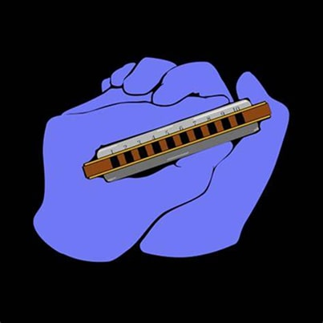
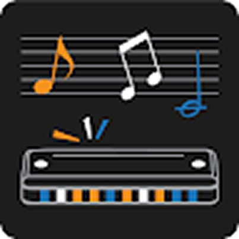

- Easy diatonic harmonica
Easy Diatonic Harmonica is a user-friendly mobile application designed to help beginners get started with the harmonica. It offers a collection of popular music tabs presented in a clear and accessible format, making it easier for new players to learn melodies and practice their skills.
Pros Cons Great for beginner Limited to diatonic harmonicas Practice with note sounds No interactive feedback Get it now:
Android - Perfect Ear
Perfect Ear is a comprehensive ear training app designed to develop your musical listening skills. It offers exercises in intervals, chords, rhythm, and scales, helping harmonica players improve pitch accuracy, timing, and overall musical awareness.
Pros Cons Trains you to recognize pitch, which improves bending and improvisation Not harmonica-specific Rhythm exercises improve timing while playing Can be complex for total beginners - Bending trainer
Bending Trainer is a specialized application created to help harmonica players master the technique of bending notes. With real-time pitch detection and visual feedback, it guides users in developing precision and control essential for expressive harmonica playing
Pros Cons Real-time pitch tracking Visual feedback helps you perfect bending technique Doesn’t teach songs or melodies Needs a quiet space for mic accuracy - Harmonica tabs pro
Harmonica Tabs Pro offers an extended library of song tabs with additional features. Ideal for both beginners and intermediate players, it allows offline access and tab saving for convenient and consistent practice.
Pros Cons Larger tab collection Some tabs are user-uploaded and can be inaccurate Favorites & offline access Get it now:
Android - Chordify
Chordify is a smart music app that automatically extracts chords from your favorite songs, making it easier to play along with any track. Though not harmonica-specific, it’s a powerful tool for harmonica players who want to understand chord progressions, jam along, or improvise in the right key.
Pros Cons Helps you jam along with any song by showing chords Focuses on chords, not harmonica tabs Detects key and tempo Subscription needed for full features - Soundbrenner
Soundbrenner is a modern and customizable metronome app designed to help musicians stay in rhythm. With visual, audio, and vibration-based tempo guidance, it supports harmonica players in improving timing, consistency, and flow during solo or group practice.
Pros Cons Very customizable metronome Requires self-discipline to use effectively Visual and vibration modes (great for live settings)